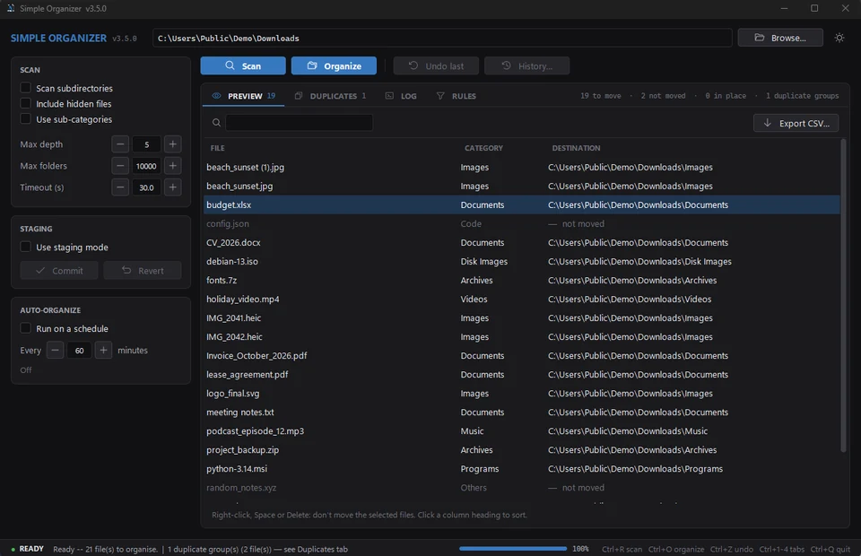

What it does
Simple Organizer sorts the files in one folder into sub-folders by type. It's made for folders that fill up over time, like Downloads or the Desktop.
It doesn't need an internet connection, doesn't run in the background and doesn't delete anything. Files are only moved, and every run can be undone.
On Windows it's a single program you start from a ZIP file, without installing. On Linux it runs with Python. macOS is not supported.
How to use it
- Choose a folder, for example Downloads.
- Click Scan (Ctrl + R). Nothing is moved yet. The Preview tab shows where each file would go.
- If it looks right, click Organize (Ctrl + O) and confirm.
- Changed your mind? Undo last (Ctrl + Z) puts everything back.
Categories
Files are sorted into these folders:
If you want, files can also go into sub-folders such as Images/Photos or Documents/PDFs. You can add your own rules on top (see below).
The user guide lists every file extension and sub-folder.
Features
| Feature | What it does |
|---|---|
| Preview | A scan only plans the moves. You see the result before anything happens, can search and sort it, keep single files where they are with Don't move, and export it as a CSV file. |
| Undo | Undo the last run, or any of the last 20 manual and 20 automatic runs, in any order. The history shows which folder each run belongs to. |
| Rules | Your own sorting rules by file extension, name pattern, size or age, also combined. For example: everything with “invoice” in the name goes to Invoices, or PDFs older than a year go to Archive. How rules work |
| Staging mode | Collect moves first, then commit or revert them together. |
| Auto-organize | Sorts the folder on a schedule while the program is open. |
| Duplicate finder | Finds files that are exactly the same. Copies go to the Recycle Bin or Trash only if you confirm. |
| Sub-folder scans | Can scan inside sub-folders, with limits for depth, number of folders and time. |
| Look | Light and dark theme. Your settings are saved. |
What it won't touch
- Files are never deleted or overwritten. If a file with the same name already exists, the new one gets a number, like
photo_1.jpg. - System files, shortcuts, temporary files and downloads that are still running are skipped.
- OneDrive files that are only stored online are not downloaded.
- For whole drives, your home folder, system folders and Git projects, it asks before doing anything.
- The undo history is written while files are being moved. If the program crashes, you can still undo.
- Only one copy of the program and one task can run at a time.
Keyboard shortcuts
| Keys | Action |
|---|---|
| Ctrl + R or F5 | Scan |
| Ctrl + O | Organize |
| Ctrl + Z | Undo last run |
| Ctrl + F | Search the Preview |
| Ctrl + 1 … 4 | Preview, Duplicates, Log, Rules |
| Space or Delete | Don't move the selected files (Preview) |
| Ctrl + Q | Quit (waits for a running task to finish) |
Installation
Windows 10 and 11
- Download
simple_organizer_windows_v3.5.0.zip. - Extract the ZIP file.
- Start
simple_organizer.exe.
The program isn't code-signed yet, so Windows SmartScreen may show a warning. Right-click the file, open Properties and tick Unblock.
Linux
You need Python 3.11 or newer with Tkinter. There is no ready-made Linux package yet.
# Debian / Ubuntu sudo apt install python3-tk # Fedora / Bazzite sudo dnf install python3-tkinter git clone https://github.com/FreakySneaky787/Simple-Organizer.git cd Simple-Organizer python3 main.py
Settings and logs
If something goes wrong, the program writes an error.log. Please attach it when you report a problem.
| System | Folder |
|---|---|
| Windows | %APPDATA%\simple_organizer\ |
| Linux | ~/.config/simple_organizer/ and ~/.local/share/simple_organizer/ |
Version history
| Version | Date | Main changes |
|---|---|---|
| 3.5.0 | 13 Oct 2026 | Don't move single files; search, sort and CSV export in the Preview; rules with several conditions; history shows the folder of every run; Auto-organize can be paused after an undo and never switches to another folder; starts about twice as fast; tests run on GitHub Actions. |
| 3.4.5 | 12 Oct 2026 | 13 fixes from the fourth review; a rules file in the wrong text encoding no longer stops the start; read-only files move between drives without leftover copies; Trash keeps the last copy of a duplicate; LibreOffice lock files and running Firefox downloads are left alone; opens the real Downloads folder on first start. |
| 3.4.4 | 9 Oct 2026 | 23 fixes from the third review; new Programs and Disk Images categories; no leftover copies when moving between drives; Desktop shortcuts are never moved; only one instance can run; errors are saved to error.log. |
| 3.4.3 | 8 Oct 2026 | 15 fixes; OneDrive online-only files skipped in the duplicate check; scheduled runs continue after a restart; log capped at 5,000 lines; window size and position remembered better. |
| 3.4.2 | 6 Oct 2026 | Safety release after a full code review; undo history saved more often and more safely; desktop.ini and Thumbs.db protected. |
Planned
Things I'd like to add. There are no dates for these yet. See also the roadmap.
- Watch mode that sorts new files as soon as they appear
- Flatpak or AppImage package for Linux
- Code-signed Windows version, so SmartScreen doesn't warn anymore